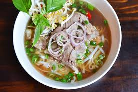

Ingredients
- Broth:
- Water
- Pot
- Beef Soup Bones
- Ginger
- Fish sauce to taste
- For Soup:
- Steak
- Basil
- Rice Noodles
- Carrots
- Bok Choy
- Hot Sauce
- Anything else delicious you may concider
Instructions
- Broth:
- Boil all the ingredients for the broth for atleast 4 hours (longer if you can)
- Sift the Bones and Ginger out of the broth
- Keep on stove boiling
- Soup Fixings:
- Place all ingredients in bowls
- Cut Steak very thin and have at room temperature
- Make rice noodles
- Cut all vegatbles thinly
- Place steak at the bottom of your bowl
- Pour boiling broth onto the steak until covered
- Add vegetables, basil and rice noodles and more broth
- Add hot sauce or more fish sauce if wanted
- Enjoy